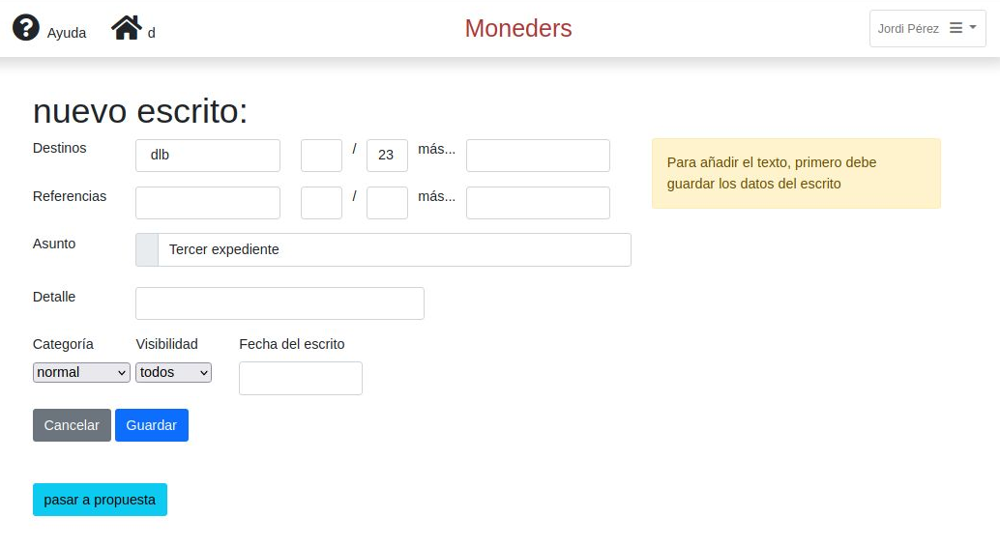
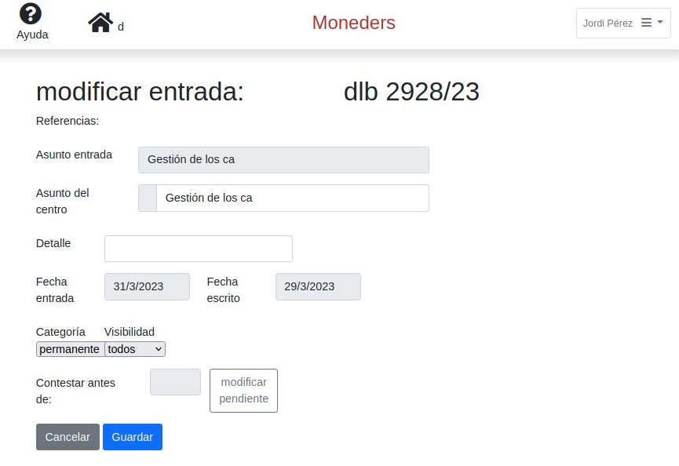
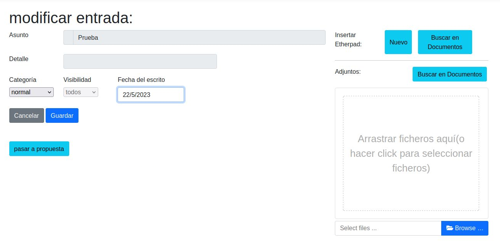

Se deja el papel y todo pasa a gestionarse en soporte informático.
MANUAL BÁSICO
MANUAL DETALLADO
2.- Más instrucciones de Acceso
4.- Pestañas (el menú general de Tramity)
6.- Gestión de entradas de la Delegación
- 6. A.- La pestaña "Entradas"
- - 6. A. 1.- La opción "Para distribuir"
- - 6. A. 2.- La opción "Correo encargado"
- - 6. A. 3.- La opción "Entradas recientes"
- 6. B.- La pestaña "Archivo de escritos"
- 6. C.- La pestaña "Permanentes de cl"
- 6. D.- La pestaña "Permanentes"
- 8. A.- Los documentos de tipo “etherpad”
- 8. B.- Los documentos de tipo “incrustado”
- 8. C.- Crear un nuevo documento
- 8. D.- Uso de los documentos
9.- Guía-resumen para elaborar un expediente
10.- Proceso final de un expediente
- I. 0.- IMPORTANTE: Primer acceso al etherpad
- I. E.- Comentarios y cambios
- I. H.- Marcar y guardar una versión
Anexo III.- Gestión de usuarios (en construcción)
Anexo IV.- Glosario de Tramity
Diccionario de términos básicos empleados en el manual. (Ir)
Tramity es una herramienta web que permite:
Cómo acceder (dentro del
escritorio remoto)
1. Abrir el navegador Firefox y esciribr la siguiente dirección:
https://MICENTRO.tramity.ctr.local/index.php (sin mayúsculas ni acentos);
2. Aparece:
3. Se accede con el usuario y contraseña personal.
Recibir correo de la Delegación
Encontrar un escrito enviado o recibido
La pestaña "Permanentes de cl"
Cómo saber si hay algún escrito pendiente de contestar
Mediante la pestaña “Pendientes”, que permite gestionar:
La pestaña "Documentos"
Un expediente puede ser:
a) un embrión de una propuesta para el propio consejo local.
b) un escrito a la Delegación. (Si es en respuesta a un escrito recibido, se dispone del botón “contestar entrada” que genera rápidamente el expediente ).
1. En la lista desplegable de la pestaña “Expedientes” hay que clicar en “Personal borrador” y clicar el botón “nuevo expediente”
2. Solo es necesario, al inicio, darle un nombre ("Asunto expediente") y pulsar "Guardar". El resto de características se pueden completar más adelante en el proceso de elaboración. [En la "entradilla" se puede poner un comentario breve.]
3. Al pulsar “Guardar” preguntará si se quieren añadir escritos o adjuntos. Estos serán el contenido del expediente (propuestas, escritos, antecedentes, etc.). Los “antecedentes” son la información necesaria para valorar y entender el por qué del expediente (por ej., el mismo expediente del año anterior con la petición de cursos anuales o convivencias, el escrito de Delegación al que se responde...).
4. Para introducir la propuesta o el escrito de respuesta hay que pulsar el botón "nueva propuesta", "nuevo escrito" o "contestar entrada" y, si hace falta, ajustar los datos que ha cogido por defecto del expediene ("asunto",...).
5. Al pulsar "Guardar" volverá a preguntar si se quieren añadir escritos o adjuntos. Si se responde que "sí" se abrirá una pantalla con un espacio a la derecha donde se permite arrastrar ficheros. Este espacio está previsto para los "adjuntos" que se quieren enviar junto con el texto del escrito; no para los “antecedentes” que se acompañan para hacerse cargo de la propuesta.
6. Para introducir el texto de la propuesta o escrito hay que pulsar "Nuevo" en Insertar Etherpad, y se abrirá el editor de textos.
7. Una vez acabada la confección del escrito o propuesta, se hace “circular” el expediente para que lo vea quien corresponda. También se puede "retirar".
8. Si el escrito ya está aprobado para enviar, es prudente repasarlo (utilizando “ver”). Una vez enviado a Delegación, ya se puede “archivar”; no antes.
Recordatorio
En el navegador Firefox del escritorio remoto hay que ir a https://MICENTRO.tramity.ctr.local/index.php (sin mayúsculas ni acentos)
Hay
que contestar "Avanzado...". Se verá la siguiente pantalla:
y,
finalmente, "Acepto el riesgo y quiero continuar"
En adelante, ya no volverá a hacer estar preguntas.
Cuando aparezca la pantalla de inicio de Tramity:
se accede con el usuario y contraseña personal.
Direcciones de interés
Conviene guardar el acceso a un centro como "dirección de interés" (para no tener que escribirla cada vez). Para ello:
Quien esté en varios cl deberá predefinir el acceso para cada centro.
Guardar el inicio de sesión
A la pregunta de “¿Quiere guardar el inicio de sesión?” debe responderse afirmativamente
Ayuda
En la parte superior izquierda de las ventanas de Tramity se muestra el icono "? Ayuda" que abre este manual.
Clicando sobre el nombre de usuario (arriba a la derecha) se despliega un menú (Preferencias - Etiquetas - Salir):

En “Preferencias” se puede definir el idioma, el nombre a mostrar, el mail y el cargo preferido. También se puede cambiar el password:
Las pestañas de la parte superior de la pantalla nos permiten acceder a todas las prestaciones del Tramity.
Se resalta en color más intenso la pestaña que está mostrando su contenido.
Las pestañas "Expedientes" y "Entradas" despliegan opciones. Alguna opción puede mostrar en rojo una cifra, que es el número de elementos que tiene pendientes de alguna acción.
El menú general tiene siete pestañas:
|
-Expedientes: |
Los generados por el consejo local |
|
-Entradas: |
Las que han llegado de la Delegación |
|
-Archivo de escritos: |
Búsqueda de escritos tanto recibidos como enviados |
|
-Permanentes cl: |
Generados por el cl y marcados como permanentes. Más accesibles |
|
-Permanentes: |
Escritos permanentes recibidos (de numeración baja de cr, etc) |
|
-Pendientes: |
Gestión de asuntos que requieren respuesta en fecha determinada. |
|
-Documentos: |
Externos a Tramity para incorporar en expedientes o escritos. |
NOTA: Pasando el cursor sobre cada pestaña aparece un “globo” explicativo del contenido.
Todas las pestañas muestran una
presentación similar, que permite:
-”mod”: modificar el expediente
-”ver”: mostrar el contenido del expediente
-”acción”: eliminar un expediente, copiarlo, etc.
La pestaña "Expedientes" tiene 5 opciones para gestionar los escritos y propuestas que se trabajan en el consejo local:
Opciones de “expedientes” (fondo gris):
|
-Personal borrador: |
Iniciar o modificar expedientes propios. |
|
-Para firmar: |
expedientes de otros pendientes de firmar |
|
-Circulando: |
expedientes de otros, y también propios, pendientes de alguna firma |
|
-Acabados: |
expedientes que ya han firmado todos |
|
-Archivados: |
expedientes guardados hechas ya todas las acciones (enviar, etc.) |
La opción “Personal borrador” muestra los expedientes que se están trabajando.
Por defecto aparecen a la vista los expedientes “normales” (los de trabajo). Si seleccionamos “en espera” veremos los expedientes que están pendientes de trabajar más adelante.
Si aparecen muchos expedientes podemos filtrar la vista por “etiquetas” (una o todas).
El botón "acción" permite eliminar el expediente.
Para iniciar un nuevo expediente, en “Personal borrador” hay que clicar el botón “nuevo expediente”. Se accede entonces a la siguiente pantalla (similar a la de “mod” o “ver” un expediente ya creado):

Hay que seleccionar:
|
Trámite: |
Actualmente no admite opciones. Previsto para posibles recorridos distintos del expediente. |
|
Vida: |
plazo en que se borrará: normal, permanente, experiencia, temporal o borrable. |
|
Visibilidad: |
quién tiene acceso: todos, d y sacd, d. |
|
Prioridad: |
urgencia en el recorrido: normal, rápido, urgente, otro, en espera. |
|
Resolver antes de: |
Señalar una fecha de resolución |
|
Etiquetas: |
Catalogación para facilitar el archivo y búsquedas. |
|
Asunto expediente: |
identifica el expediente. Es un campo obligatorio y clave para búsquedas. |
|
Entradilla |
breve explicación del contenido [opcional] |
|
Firmas oficina |
[opcional: para señalar quienes deben preparar/ver el expediente]. |
“Vida”: está pensada para facilitar el borrado de los expedientes y evitar que se acumulen innecesariamente: al cabo de pocos días, cuando periódicamente se borren todos los “borrables”, etc. Cada Centro determina la duración de las opciones predefinidas. Está en fase de implementación.
"Visibilidad": Se han definido diferentes grados, que afectan tanto a los expedientes como a los escritos (entradas y salidas):
d: solo visible para el director
d y sacd: visible para el d y el sacd, exclusivamente
“Prioridad”: señala la rapidez con que interesa circular el expediente, señalando la fecha deseada de ejecución. Los expedientes “urgentes” aparecen en rojo en los listados.
“Firmas oficina”: indica quienes han de ver el expediente.
El botón “Guardar”: pregunta si se quiere añadir escritos o adjuntos. En caso afirmativo, presenta la siguiente pantalla:
Hay varias zonas diferenciadas:
Parte superior izquierda: los datos básicos del expediente
Parte superior derecha: Antecedentes: aquí estarán todos los antecedentes del expediente.
Parte inferior: listado de todas las acciones que contiene el expediente: propuestas, escritos, etc.
Haciendo click en los botones correspondientes podrán añadirse Antecedentes:
Entradas: escritos recibidos (que estén en el registro del Tramity)
Otros Expedientes
Escritos enviados (seleccionados desde el Tramity)
Documentos: documentos externos al Tramity (Word, Excel, PDF, fotografía, etc).
Y además:
"nueva propuesta": la propuesta propiamente dicha (textos explicativos, ...).
"nuevo escrito": generar un escrito para enviar.
"contestar entrada": generar un escrito en respuesta a otro.
En los tres casos se abre una página así (en "nueva propuesta" no aparecen “Destinos” ni “Referencias”):

“Asunto” (obligatorio) y “Detalle” (opcional) identifican la propuesta o el escrito.
En el caso de escritos se debe seleccionar el Destino y las Referencias (si las hay).
También cabe especificar la Categoría (normal / sin numerar / permanente) y la Visibilidad (todos / d / d y sacd).
El botón "Pasar a propuesta" permite convertir un escrito en propuesta; es decir, quitarle los encabezados de origen y destino para enviar.
El botón “Guardar”: pregunta si se quiere añadir escritos o adjuntos. En caso afirmativo, presenta la siguiente pantalla (similar tanto para propuestas como para escritos):
“Fecha del escrito”: no es obligatorio, pero si no se introduce, lo recuerda un mensaje.
“Insertar Etherpad”: para escribir el contenido propio del escrito o propuesta mediante el editor de texto colaborativo “Etherpad”.
"Adjuntos": para introducir documentos que acompañen al escrito o propuesta:
Con el Botón “Buscar en Documentos” para los que ya están guardados en Tramity
Arrrastrando o seleccionándolos con el botón “Browse…” si no lo están.
UN EXPEDIENTE CON UNA PROPUESTA Y VARIOS ESCRITOS SE VERÁ ASÍ:
| mod.datos | permite modificar todos los datos, |
| revisar | permite revisar el texto, |
| eliminar | ese escrito o propuesta |
| enviar | en el caso de los escritos |
| clip (doble clic) | gestionar los adjuntos |
Los botones "Firmar - Añadir Firmas - Recircular" gestionan la revisión del expediente:
- Firmar: para firmar el expedientes
- Añadir firmas: añade quiénes han de revisar el expedientes
- Recircular: borra todas las firmas y vuelve a pasar para firmar a todos los implicados
Si se añaden las firmas de los que han de revisar el expediente, al pulsar "Volver" el expediente pasa a la opción "Para firmar"
Esta opción mostrará los expedientes
pendientes de firmar. (En rojo se indica cuántos expedientes veremos).
La pantalla que aparece es similar a la de "Personal Borrador" (5. A.).
Pulsando “revisar” se accede al expediente:
Hay varias zonas diferenciadas:
1- Parte superior: los detalles del expediente:
|
(izquierda): |
ponente, tipo de trámite, estado y vida |
|
(derecha): |
prioridad y fecha de resolución |
|
(debajo): |
Asunto, Entradilla y comentarios |
2- Parte inferior:
3- Parte derecha:
Antecedentes, que se pueden ver y descargar. (***)
Firmas (Firmar / Añadir firmas: se pueden “Añadir firmas” si así se considera oportuno). (****)
Recorrido seguido hasta el momento.
(*) Con “revisar” se tiene acceso al texto del escrito, que se puede modificar, hacer comentarios etc. Lo que se anota, queda registrado al instante; no hace falta guardar. (Para más información ver la explicación de uso del “Etherpad”).
(**) Para ver un adjunto, hay que descargarlo y abrirlo.
También se puede modificar. En este caso, como el archivo se habrá guardado en el disco duro del escritorio remoto (en principio, en la carpeta “descargas”), al final hay que “arrastrarlo” de nuevo a la ventana de los adjuntos y eliminar la versión anterior.

(***) "ver todos” genera un pdf con todos los
antecedentes que están a la vista y los incluidos dentro de los
expedientes puestos como antecedentes.
(****) “Re-circular” borra todas las firmas y comentarios, y vuelve a la opción “Para firmar”.
Al pulsar “firmar” (botón verde) se abre la siguiente ventana:
-Votar (ok-no-espera) y clicar “Guardar” (ok/no: sigue su recorrido. “espera”, se queda en “para firmar”).
-Antes de votar se puede añadir un comentario o "pedir aclaración" al ponente (anotando la duda en “Comentario”).
Botón “Cerrar”: sale del cuadro de diálogo sin hacer nada.
Botón "Guardar": El voto emitido queda registrado en la lista de firmas, con los comentarios y aclaraciones, que serán visibles para todos.
Vista al pedir aclaración al ponente (amarillo):
Vista tras la respuesta del ponente (verde):
El funcionamiento de "acción" en la lista "Para firmar":
* Mover a borrador: deja de circular
* Copiar a borrador: se hace una copia en borrador, pero sigue circulando
* Copiar a copias: se copia el expediente en la pestaña "Copias" [pendiente de activar]
En esa opción se muetran los expedientes que todavía no han terminado su recorrido:
y se puede ver: quiénes han firmado, comentarios, etc.
"revisar" permite ver de nuevo el expediente, volverlo a firmar, etc.
"acción" (igual que en la opción "Para firmar") permite: Mover a borrador - Copiar a borrador - Copiar a copias. [Copias está pendientede activar]
La opción “Acabados” muestra todos los expedientes que ya han terminado su trámite (firmados por todos).
Con “mod” (o “ver”) se accede al contenido del expediente. Con “acción” se puede mover el expediente a “borrador” (o pasar a “borrador” una copia del mismo).
Pulsando “mod” en un expediente se accede a la siguiente vista:
El botón “Archivar” pasa el escrito ya enviado a la lista de “Archivados”, visible con la opción “Archivados” de la pestaña “Expedientes”
Para borrar un expediente en “Acabados”, primero hay que pasarlo a “Archivados” y de ahí a “Borrador” para eliminar. Antes de eliminarlo, pedirá confirmación (se ha pensado así para evitar eliminar expedientes de modo involuntario).
Etiquetas
En esta fase también se pueden añadir etiquetas al expediente. Se recomienda hacerlo, pues es la clave para localizar después los expedientes.
Las etiquetas pueden ser personales o del consejo local. Se definen en el menú de preferencias del usuario (arriba a la derecha):
Al pulsar "Etiquetas" aparece el listado:
Se pueden modificar, borrar, o crear una "nueva etiqueta" (personal o del centro):
La opción “Archivados” de la pestaña “Expedientes” muestra los expedientes ya enviados y archivados
-Cada uno ve los que le corresponden según los permisos que tenga (todos, d y sacd, d).
-Quedan ordenados por etiquetas, tanto personales como del cl.
-“De qué asunto trataba”, “Etiquetas” y “período” permiten acotar el listado.
-Las etiquetas pueden cambiarse siempre que se quiera.
“acción”, pasa o copia un expediente a la carpeta “borrador” o a la de otro cargo (todas las propuestas y escritos del expediente pasarán a ser antecedentes).
Tramity gestiona los escritos que se reciben en el centro, la búsqueda de escritos (entrantes o salientes) y el acceso ordenado a los de tipo permanente.
La pestaña "Entradas" tiene tres opciones:
- Para distribuir
- Correo encargado
- Entradas recientes
(Inicialmente esta opción solo la ve el director. Hay que entrar en Tramity con el usuario "admin" y en "Parámetros" habilitar la opción "todos").
Muestra los escritos pendientes de descargar y encargar.
El botón "revisar dock" descarga las nuevas entradas dirigidas al ctr, que se añadirán a la lista de las ya descargadas anteriormente.
Cada entrada se puede:
"mod": modificar. (SOLO EL DIRECTOR);
"ver": el contenido
"acción": otras cosas.
--Pulsando en "mod" aparece:

Campos modificables: (el protocolo de entrada no se puede modificar):
|
- Asunto entrada: |
Definido por la dl |
|
- Asunto del centro: |
Modificable según interese al propio ctr |
|
- Detalle: |
Para anotar un comentario |
|
- Fechas: |
De recepción en el centro y del escrito |
|
- Categoría: |
"normal", "permanente" y "sin numerar" |
|
- Visibilidad: |
"todos" / "d" / "d y sacd": (El d puede cambiarla, según vea oportuno) |
|
- Contestar antes de: |
fuera de uso aquí |
|
- modificar pendiente: |
fuera de uso aquí |
Con los botones "Cancelar" y "Guardar" se vuelve al listado de entradas.
--Pulsando en “ver” se abre una ventana con una vista del escrito.
Permite:
--Pulsando en “acción” se muestra esta vista:
Esto permite:
"Encargar a": pasa la entrada a alguien, que la verá en su pestaña de “correo encargado”:
"Marcar como visto": la entrada desaparecerá del listado "Para distribuir"
"Añadir a un expediente": el expediente debe existir como “borrador”:
"Crear un nuevo expediente": que queda como “borrador” con esta entrada como antecedente, y con un escrito ya preparado para redactar la respuesta. Esta es la manera más directa de contestar una entrada. Presenta esta ventana:
"Crear un nuevo pendiente": para encargarlo a alguien del consejo local:
"Etiquetas": para facilitar la búsqueda posterior del escrito:
Cuando el Director (o quien hace sus veces) encarga el correo a alguien en concreto, además de a la opción "Entradas recientes", el correo también pasa a la opción "Correo encargado":

La vista es similar a la opción anterior "Para distribuir" y permite ver a quién se han encargado las entradas. Esto se hace mediante el desplegable de "listar entradas encargadas a".
Con las opciones “Para distribuir” y “Correo encargado” se consigue que no quede indefinida la gestión de ninguna entrada:
Una vez el Director (o quien hace sus veces) da entrada al correo, éste pasa a la opción "Entradas recientes", que ya es visible para el resto del consejo local, en función de los permisos de visibilidad ("todos" / "d" / "d y sacd"). Presenta los escritos recibidos los últimos días (el período se define en las preferencias de la aplicación):
Seleccionando un escrito, podemos clicar los botones:
“detalle”: modificar o introducir el “detalle” del escrito, según interese
“ver” y “acción”: es lo mismo que en la opción “Para distribuir”
“ver destinos”: (botón sin uso actual)
Los botones negros actúan sobre la lista entera de escritos que vemos en la pantalla:
“Copy”: copia la lista para poder pegarla en un documento
“Excel” y “PDF”: exportan la lista en estos formatos
“Column visibility”: permite seleccionar qué columnas se quieren ver en la lista
“Print”: imprime la lista

Hay 2 maneras de buscar un escrito (tanto de entrada como de salida):
y pulsar el botón “buscar”.
Además, pulsando en el botón “ver todas las opciones” se abren más posibilidades de búsqueda:

El resultado de una búsqueda se ve así:
Como en otras pantallas similares, si se marca un escrito, permite usar los siguientes botones:
“detalle”: modificar / introducir el “detalle” del escrito, según interese
“ver” y “acción”: es lo mismo que para la vista de “Para distribuir”
Los botones negros actúan sobre la lista entera de escritos que vemos en la pantalla:
“Copy”: copia la lista, para poder pegarla en un documento
“Excel” y “PDF”: Exportan la lista en estos formatos
“Column visibility”: permite seleccionar qué columnas se quieren ver en la lista
“Print”: Imprime la lista
Relación de expedientes que tienen como "vida" la opción "permanente" (también podrían estar en "archivo de escritos" con otro tipo de "vida"):
Relación de los escritos de cr de numeración baja (u otros permanentes). Tiene una apariencia similar a la opción “Entradas recientes” de la pestaña “Entradas”:

Permite la búsqueda de un escrito por protocolo, por años o por palabras clave.
Esta pantalla es la que aparece cuando se entra en Tramity. Permite gestionar los escritos pendientes de contestar a fecha de hoy:
Un pendiente con fecha de vencimiento “hoy”, se considera pendiente a partir de “mañana”; por eso no aparece en este listado.
Los pendientes se dan por contestados automáticamente cuando se envía la respuesta.
Puede suceder que Tramity no sepa que se ha contestado un escrito, por varios motivos:
En estos casos: se debe marcar la casilla del escrito y hacer click en el botón “marcar como contestado”.
Si se pulsa “modificar” tras seleccionar un pendiente aparece la siguiente ventana:
Las modificaciones pueden ser:
Esta ventana es idéntica a la de "nuevo pendiente":
Si se clica el botón "ver ficha completa" aparece la siguiente ventana:
Campos nuevos:
|
“protocolo o referencia”: |
permite seleccionar el escrito que está relacionado con el pendiente. Al identificar el escrito, se añaden automáticamente los datos del pendiente: asunto... |
|
“¿con quién es el pendiente?”: |
se selecciona el afectado (no tiene porqué ser el mismo del protocolo) |
|
“Observaciones”: |
para anotar detalles de interés para el cl |
|
“Visibilidad”: |
define quién puede verlo (todos / d / d y sacd) |
|
“estado”: |
la situación del pendiente (iniciado / acabado / en proceso / cancelado) |
|
“fecha acabado”: |
aquella en la que termina el pendiente |
Pulsando el botón “ver ficha sencilla” se vuelve a la presentación reducida del pendiente.
REPETICIONES PERIÓDICAS:
El botón “ver periodicidad” permite generar un pendiente periódico (que se repita cada “x” tiempo).
Se mostrará una vista similar a “ver ficha completa” con el añadido de la Repetición:
Si se selecciona Repetición “anual” aparece:
Permite fijar el período de vigencia del pendiente (“desde” - “hasta”) y concretar la repetición:
-"anualmente": una sola vez al año (empezando por el día del inicio), o cada varios años
-Un(os) día(s) concreto(s), "separados por comas", de un mes seleccionado
-Un día de la semana "de cada" determinado mes
-Hacer la selección por "días de meses cada X años"
Si se selecciona Repetición mensual aparece:

-“mensualmente”: cada mes a partir del día del inicio.
-Un(os) día(s) concreto(s), "separados por comas", de cada mes
-Un día de la semana
Si se selecciona Repetición semanal aparece:
Además del período de vigencia (“desde” - “hasta”) se puede seleccionar:
-semanalmente, a partir del día del inicio.
-Un(os) día(s) concreto(s) de la semana.
Si se selecciona Repetición diaria aparece:
Con esta pestaña accedemos a la herramienta que gestiona el “repositorio de documentos” de Tramity:
Estos documentos, una vez que están en el repositorio se pueden usar para:
El repositorio de documentos está pensado
para sustituir las carpetas del ordenador y tener toda la documentación en
un único entorno de trabajo: Tramity.
Llamamos documentos de tipo “etherpad” a los que se han generado con el editor de textos Etherpad, que forma parte de Tramity. Tiene 2 posibilidades:
“editar”: abre el Etherpad para poder modificar lo escrito en el documento
“datos”: permite cambiar cosas. Presenta la siguiente pantalla:
Puede modificarse el Nombre y cambiar las Etiquetas o la Visibilidad.
(La Visibilidad es oficina / personal, según puedan verlo todos los del cl o solo el interesado).
Al pulsar el botón “Etherpad” se abre la herramienta Etherpad para modificar el texto.
Son los documentos que no son etherpad, y que se “incrustan” en la base de datos para archivo y tratamiento. Tiene 2 posibilidades:
“descargar”: baja el documento a la carpeta “Descargas” del ordenador, como hacen otros sitios web
“datos”, presenta la siguiente pantalla:
En la ventana de la parte inferior derecha se “incrusta” el documento de 2 maneras:
Esa ventana también permite:
Cuando entramos en la pestaña “Documentos”, el botón “Nuevo documento” abre la siguiente ventana:
Los botones en “insertar escrito” sirven para añadir el contenido del documento:
Los documentos de la pestaña “Documentos” se pueden colocar en los expedientes como antecedentes, como texto del escrito o también como adjuntos:
2. como texto del escrito: (con el botón “Buscar en documentos” en “Insertar Etherpad”)
En la pantalla anterior: botones “nueva propuesta”, “nuevo escrito” y “contestar entrada” accedemos a las pantallas “nueva propuesta”, “nuevo escrito” y “contestar entrada”. En ellas el botón “Guardar” pregunta:
“¿añadir escrito o adjuntos?” clicar el botón “sí”
aparece la pantalla:
3. como "adjuntos”: se podrán modificar y anotar, antes de enviar (botón “Buscar en documentos” en “Adjuntos”)
En la pantalla “Expediente”, los 3 botones “nueva propuesta”, “nuevo escrito” y “contestar entrada” llevan hasta el proceso descrito en el punto anterior
aparece la pantalla:
NOTA: Los documentos que se añaden como “antecedentes” en un expediente, permanecen en la pestaña de “Documentos” independientemente de la evolución que tenga el expediente. Si éste, al final del proceso, se elimina, el documento seguirá en la pestaña de “Documentos”.
Ir a la pestaña “Expedientes”, opción “Personal borrador” y clicar el botón “nuevo expediente”.
Solo es imprescindible darle un nombre que lo identifique (Asunto expediente).
-El resto de características se pueden completar más adelante en el proceso de elaboración:
– Vida: la duración del expediente
– Visibilidad: a terceros
– Prioridad: urgencia
– Entradilla: un comentario breve de interés para el consejo local, o una “propuesta” si es algo muy simple.
(Hasta aquí solo se han preparado las “tapas” del expediente, que está vacío).
9 .A.- Antecedentes: Aquí se colocan todos los antecedentes, ya sean entradas de escritos, otros expedientes, escritos de salida o documentos incorporados al Tramity (un word, excel, pdf, etc). Para ello hay que utilizar los botones correspondientes (“Entrada” – “Expediente” – “Escrito” – “Documento”).
9. B.- Propuestas: Si se quiere circular una propuesta hay que utilizar el botón “nueva propuesta” (permite mayor extensión, comentarios y anotaciones de terceros que la “Entradilla”).
9. C.- Escritos: Se introducen los escritos que se quieren enviar con el botón “nuevo escrito”. Si se está contestando a uno concreto es mejor utilizar el botón “contestar entrada”, pues recoge directamente los datos del escrito origen y lo coloca como antecedente.
9. D.- Adjuntos: Tanto a las “propuestas” (botón “nueva propuesta”) como a los “escritos” (botón “nuevo escrito") se les pueden anexar documentos adjuntos, (al clicar el botón "Guardar"). Estos pueden modificarse y serán enviados con el escrito correspondiente.
9. E.- "Circular": Cuando el expediente ya está completo, se pone a circular (clicando el botón "Circular"). A partir de ese momento queda visible para quienes lo han de firmar.
1. Una vez termina su recorrido, el expediente aparece en la opción “acabados” de la pestaña “Expedientes” del consejo local. Ya está aprobado o descartado [si está descartado, se verá resaltado en color amarillo].
2. Es preciso repasar las observaciones y sugerencias de cambios para introducir lo que corresponda en los escritos. Si algún escrito, o el propio expediente, está descartado, se verá resaltado en amarillo, y aparecerá con el añadido de “NO” en el asunto, además de que la firma será “NO” y estará en color rojo y no verde, como es habitual con la firma positiva.
3. Lógicamente, los documentos adjuntos (Anexos al escrito, etc), quizás deberán retocarse: p.ej., volver a cargarlos añadiendo la ref. al escrito de salida y cambiando el nombre, etc.
4. Para saber cómo se verá el escrito que se envía, basta con clicar en “ver”: lo muestra en formato web pero tenemos el botón “descargar en pdf”: el archivo pdf es el que recibe la dl.
5. Como se ha dicho, la aplicación impide “Archivar” el expediente hasta que todos los escritos aparezcan como “enviado el DD/MM/AAAA”.
6. Una vez terminadas todas las acciones del expediente se pasa a “archivados”. Se recomienda clasificar por etiquetas, para facilitar su localización y reutilitzarlo en posteriores expedientes.
Los documentos etherpad se abren en una ventana nueva del navegador.
La primera vez que se intente abrir un documento etherpad, el navegador Firefox lo impedirá por motivos de seguridad.
Por ejemplo, en la ventana de "nuevo documento" (es similar desde
cualquier otro acceso):

Al pulsar "Nuevo", se verá lo siguiente en la parte superior: "El Firefox
ha impedido que se abra una ventana emergente"
Hay que pulsar en el botón "Preferencias":

Y escoger la primera opción: "Permitir las ventanas emergentes para
XXXX.tramity.ctr.local"
Ahora ya abrirá la ventana con el etherpad y ya no volverá a preguntarlo.
Se trata de un editor de texto colaborativo: diferentes usuarios pueden modificar a la vez el mismo texto (pad). Estos se identifican por su nombre de usuario y color de edición propio.
Las funciones normales de edición son las habituales de cualquier editor.
La vista de este editor de texto es:

Los iconos de la barra superior representan:
|
1, 2, 3, 4: formato de letra: negrita, cursiva, subrayado,
|
14: tamaño de letra |
|
5: párrafos numerados |
15: estilos de párrafo predefinidos |
|
6: párrafos marcados con un punto al inicio |
16: para añadir comentarios o sugerir cambios |
|
7: añade sangrado a todo el párrafo |
17: imprimir |
|
8: quita sangrado a todo el párrafo |
18: importar/exportar de/a otros formatos |
|
9: deshacer o rehacer cambios |
19: línea temporal de cambios en el texto |
|
10: borra el color de autoría del texto |
20: marcar versión |
|
11: añade una tabla |
21: configuración |
|
12: tipo de letra (“fuente”) |
22: compartir enlace |
|
13: tipo de justificación de párrafo |
23: usuarios de este texto que vemos (pad) |
El tabulador inicial de comienzo de párrafo como tal no está habilitado. Aunque se ha definido una macro que introduce cuatro espacios cuando se pulsa un tabulador, se recomienda redactar sin tabular, pues la doble justificación deforma esos espacios.
-Las aportaciones de los distintos usuarios se distinguen por el color con el que quedan resaltadas.
-La acción de “borrar el color de autoría” (10) borra todos los colores, de manera que, a partir de ese momento, no queda a la vista quién ha hecho cada aportación.
-“Borrar el color de autoría” tiene sentido hacerlo cuando se empieza a circular el expediente, pues interesa que comience a circular “limpio” (no tiene interés saber quién de la oficina ha introducido cada frase). O quizás cuando el expediente ha acabado de circular, al archivar.
-En cualquier caso, conviene saber que al enviar un escrito de salida, se envía el texto en formato pdf (o se descarga en word), desapareciendo estos colores.
-Para trabajar más cómodamente, en preferencias puede decirse que “oculte” los colores de autoría a la vista, aunque se mantienen en el texto (porque no los “borra”).
Ahora mismo, la exportación e impresión de tabla no está bien resuelta. Si quiere acompañarse un cuadro que pueda imprimirse, procesarse, etc., es preferible adjuntarlo como hoja de cálculo normal (Excel, o LibreOfficeCalc).
O, si la tabla es sencilla, adjuntarla convertida en texto, separada por espacios.
Interesa utilizar esta herramienta para hacer comentarios o sugerir cambios en el texto, a no ser que se trate de detalles insignificantes.
-Primero hay que seleccionar el texto que se quiere comentar o cambiar, y después hay que clicar el botón (16) de “comentario”:
En la caja que aparece (“Comment”) se escribe el comentario.
-Si se quiere sugerir un cambio, hay que mover el deslizante de “Include suggested change”:
-Finalmente, hay que clicar “Comment”: el comentario (y sugerencia de cambio) quedará incorporado.
La frase comentada quedará resaltada con otro color (amarillo), además de añadirse una llamada en el lateral derecho. Al pasar el cursor por encima aparecerá el detalle del comentario y cambio.

-Otro autor puede añadir una réplica, aceptar o rechazar la anterior, etc. Siempre son revertibles. Y solo el autor del comentario puede eliminarla.
En el texto que se exporta o envía, los comentarios no aparecen. Solo lo que ha quedado escrito finalmente.
Interesa, por lo tanto, que antes de enviar un escrito nos aseguraremos de que se han recogido todos los cambios acordados.
Permite importar cualquier texto en Word, odt y otros formatos. Hay que seleccionarlo y después clicar “Importar ahora”.
También puede exportar el texto en cualquiera de los formatos señalados. Basta con seleccionar el deseado.
Como ya se ha dicho, ahora mismo no exporta bien las tablas.
Al exportar lo hace en un tipo de papel y márgenes de página y entre párrafos que no son los habituales. Con la macro etherpad que se incorporará a los editores de texto Word y LibreOffice, el texto se ajustará automáticamente a los parámetros habituales.
Permite ver la evolución del texto en el tiempo desde su creación.

Clicando las flechas “importar/exportar” permite exportar la versión de un momento concreto.
Clicando el botón “VOLVER AL PAD” se regresa a la ventana normal de edición del texto.
Clicando la estrella (20), esa versión queda guardada para posterior consulta. Pueden guardarse tantas versiones como se quiera. Las versiones guardadas quedan señaladas en la línea de tiempo.

Por ejemplo (cada estrella en la línea de tiempo es una versión guardada):

Permite definir las características de presentación y trabajo:

-Mostrar el chat y los usuarios que están escribiendo en ese momento
-Mostrar u ocultar los colores de autoría
-Mostrar los números de línea: no se recomienda para un texto normal
-¿Leer contenido de derecha a izquierda?: para algunos idiomas exóticos
-¿Comprobación ortográfica?: para que compruebe la ortografía
-Mostrar el autor al pasar por encima: muestra quien ha escrito ese texto
-Mostrar o no los comentarios.
El Etherpad no tiene una herramienta de revisión ortográfica propia, utiliza la del navegador con el que estemos trabajando.
-Para asegurarnos de que el navegador tiene definida la corrección ortográfica del idioma que nos interese, haremos lo siguiente:
Firefox: clicamos en las tres rayas horizontales de la parte superior derecha (“Menú”). Clicamos sobre “Opciones”. Se abrirá una nueva pestaña con un recuadro de búsqueda. Ahí escribimos “ortografía”: aparecerá la posibilidad de cambiar de idioma. Si lo cambiamos, será necesario “Reiniciar el Firefox”: lo hacemos y ya está.
Chrome: clicamos en los tres puntos de la parte superior derecha (“Personaliza y controla”). Clicamos sobre “Configuración”. Se abrirá una nueva pestaña con un recuadro de búsqueda. Ahí escribimos “idioma”: aparecerá la posibilidad de escoger los idiomas a los que se aplicará la corrección ortográfica. Cuando lo hayamos hecho, ya podemos cerrar la pestaña de Configuración.
Los usuarios, cargos, contraseñas y otras características del Tramity del centro vienen predefinidas por la Delegación.
De todas maneras, desde cada centro, se pueden modificar los diferentes parámetros del Tramity accediendo con el usuario "admin", aunque se recomienda ser muy prudente al efectuar cambios.
La ventana del Administrador consta de las siguientes pestañas:
- "Preferencias": selección del idioma y cambio de password de "admin".
- Usuarios: para crear, modificar o borrar usuarios, y cambiar suw passwords
- Cargos: permite crear, modificar o borrar cargos
- Trámites: prestación fuera de uso [se recomienda no cambiar nada]
- Parámetros: para modificar opciones por defecto [se recomienda no modificar]
Cada "usuario" tiene un "nombre a mostrar" que lo identifica, un "login" con el que se accede a la aplicación, y un "cargo preferido". También tiene asociado un "password" que se puede cambiar.
Cada "cargo" se identifica por una "sigla" y una "descripción"; puede marcarse como "director" y "sacerdote". Hay que seleccionar un "Titular" de entre los usuarios. Y puede tener un "suplente" (p.ej., para cuando se ausenta el director)
Hay unos "usuarios" de sistema [default, manager] que no deben modificarse (son para gestión de incidencias y apoyo desde la Delegación).
[En construcción]
Expediente (concepto genérico): Documentación correspondiente a un asunto.
Relacionados con expedientes:
Personal borrador: expedientes propios en fase de elaboración.
Para firmar: expedientes, de otros, pendientes de firmar
Circulando: permite seguir los expedientes que están circulando.
Acabados: expedientes vistos por todos, pendientes de gestionar
Archivados: expedientes guardados una vez hechas todas las acciones (enviar, etc.)
Relacionados con escritos:
Entradas: Escritos recibidos, pendientes de ver por el d y darles curso.
Para distribuir: Nuevos escritos recibidos a los que el d ya ha dado curso.
Entradas recientes: Correo recibido los últimos 10 días.
Archivo de escritos: búsqueda de escritos a/de la dl
Permanentes cl: expedientes del cl que se destacan para tener un acceso más fácil
Permanentes: consulta de escritos permanentes (numeración baja de cr, etc)
Otros:
Pendientes: gestión de asuntos del registro o del propio consejo local que requieren respuesta en fecha determinada.
Documentos: Introducción de documentos externos a la aplicación.
Campos que hay que completar para un nuevo expediente (borrador):
Trámite: De momento está fijo como "ordinario"
Vida: Plazo en que se borrará el expediente: normal, permanente, experiencia, temporal o borrable.
Visibilidad: Quién tiene acceso a un escrito o expediente: todos, d y sacd, d
Visibilidad todos: cualquiera ve todo
Visibilidad d y sacd: accesible solo al d y sacd
Visibilidad d: solo es visible para el d del cl
Prioridad: Urgencia en el recorrido: normal, rápido, urgente, otro, en espera.
Etiquetas: Catalogación del expediente o escrito para facilitar el archivo y búsquedas: a escoger entre las definidas por el consejo local o personales.
Asunto expediente: identifica el expediente. Es un campo obligatorio y clave para búsquedas
Entradilla: [opcional: breve explicación, o para diálogo al tramitar]
Selección de firmas para la circulación del expediente:
Firmas oficina: selección de quiénes han de ver ese expediente cuando se ponga a circular.
Escritos o adjuntos que se pueden añadir a un borrador de expediente:
Nueva propuesta: la propuesta propiamente dicha (textos explicativos, ...)
Nuevo escrito: generar un escrito para enviar
Contestar entrada: generar un escrito en respuesta a otro
Escritos que se pueden añadir a un borrador de expediente como antecedentes:
Entrada: escritos recibidos (que estén en el registro de Tramity)
Expediente: Expedientes de la oficina
Escrito: escritos enviados (seleccionados desde el registro de Tramity)
Documento: documentos externos a Tramity (Word, Excel, PDF, fotografía, etc).
|
TÉRMINO |
ÁMBITO |
|
[trámite de expedientes] |
|
|
[trámite de expedientes] |
|
|
[trámite de escritos] |
|
|
[campos borrador expediente] |
|
|
[trámite de expedientes] |
|
|
[trámite de expedientes] |
|
|
[añadir a borrador expediente] |
|
|
[antecedentes] |
|
|
[trámite de otros] |
|
|
[antecedentes] |
|
|
[trámite de escritos] |
|
|
[campos borrador expediente] |
|
|
[antecedentes] |
|
|
[campos borrador expediente] |
|
|
[antecedentes] |
|
|
[concepto genérico] |
|
|
[selección firmas] |
|
|
[añadir a borrador expediente] |
|
|
[añadir a borrador expediente] |
|
|
[trámite de expedientes] |
|
|
[trámite de otros] |
|
|
[trámite de escritos] |
|
|
[campos borrador expediente] |
|
|
[campos borrador expediente] |
|
|
[campos borrador expediente] |
|
|
[campos borrador expediente] |
|
|
[campos borrador expediente] |
|
|
[campos borrador expediente] |
|
|
[campos borrador expediente] |
|
|
|
Barcelona, 20 de junio de 2023